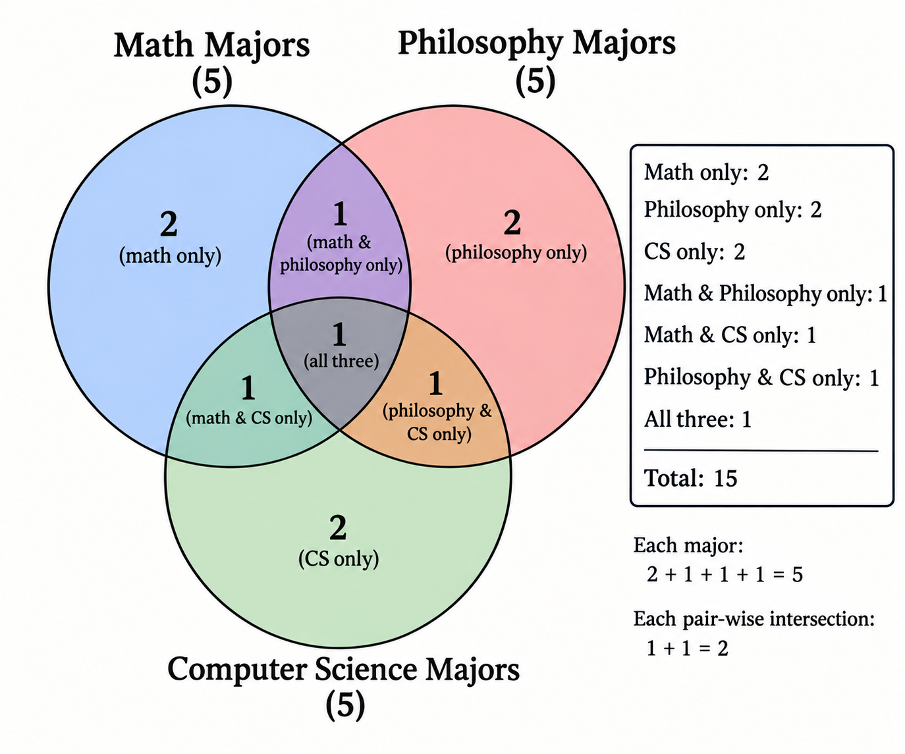
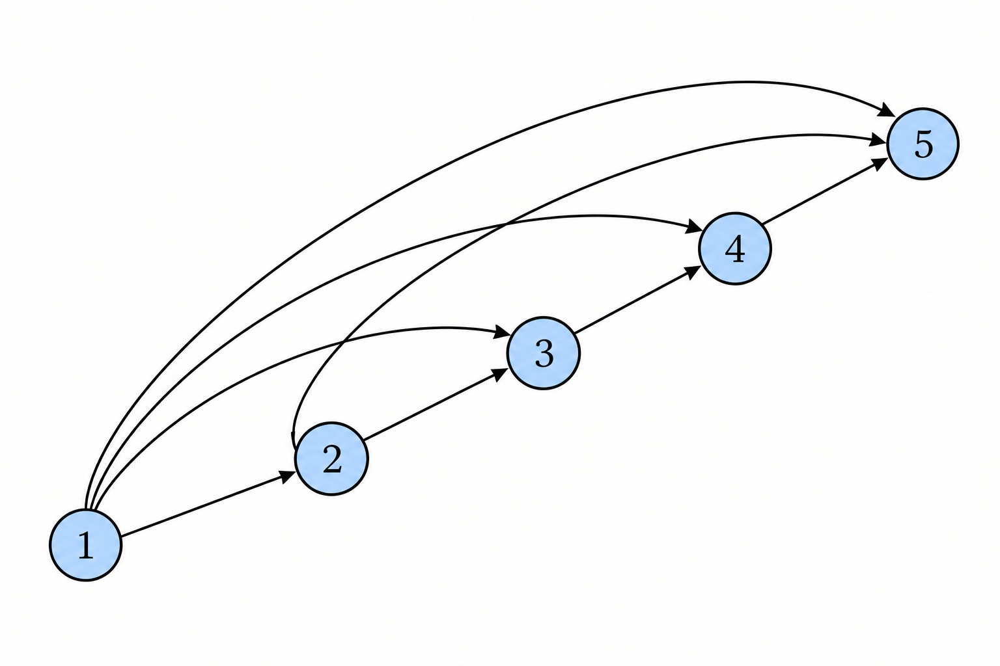

Chapter 5: Predicate Syntax and Semantics
In the previous chapters, we developed propositional logic, both its syntax and semantics.
In this chapter we will discuss a new and more expressive system of logic, predicate logic. Predicate logic uses the same propositional logic structure, but adds detail to the nature of propositions. Rather than propositions being the fundamental components of a formula, propositions are themselves constructed from constituent predicates and objects.
Predicates and Objects
As you consider many examples of propositions, you notice a pattern. They are always made up of an “object” and a “predicate”. Predicates and objects are linguistic notions that we will now explain.
For example, in the sentence “The ball is red”, the object is “the ball”. The predicate is “is red”.
The object is the thing that the sentence is about.
The predicate is the claim that we make about it.
Exercise
In the proposition “Anya is tall” identify the predicate and object.
Now as you consider more propositions you may quickly recognize that many of them involve multiple objects at the same time. For example “1 is less than 2” uses the objects (the numbers) 1 and 2.
We can also find examples like “Ljubljana is in the middle of Zagreb, Graz, and Venice.” In this sentence there are four objects, the four referenced cities, and one relationship, the “is in the middle of” relation.
Definition
An object or constant is a particle of a proposition, which refers to something.
A predicate is a particle of a proposition, which asserts a claim about objects.
If the predicate asserts a claim about n objects, then is said to have arity n.
If the arity of a predicate is 1, then we call it a property.
If the arity of a predicate is 2, then we call it a binary relation.
If the arity of a predicate is 3, then we call it a ternary relation.
If the arity is larger than n then we simply say that is an n-ary relation.
Exercise
Consider the proposition “The average of 5, 6, and 7, is 6.”
Identify the objects, the predicate, and the arity of the predicate.
There is a helpful way to visualize a property (recall that a property is a predicate which applies to just one object at a time).
Take for example, a party in which some people are math majors, some are philosophy majors, some are computer scientists. We can represent this by a Venn diagram.

There is an obvious connection between properties and sets. Consider the property "being a math major". We can identify it with the set of all individuals who are math majors. Therefore the upper-left circle in the Venn diagram represents the set of math majors, but we can think of it corresponding to the property of being a math major.
Let's get even more specific. Let's suppose that the people at the party are named Adam, Brooke, Cecil, ..., Jelani.
In our symbolic system of logic we'll want symbols for each of these individuals, and we tend to prefer lower-case Latin letters for "constant symbols". Therefore let's use the symbols .
Keep in mind that the symbols are through , but the meanings of the symbols are the corresponding people.
The correspondence between a symbol and its meaning is tracked by an "interpretation". We will use the symbol for an interpretation. It is most nearly pronounced as the English 'i' in the word "bit".
We choose the predicate names to denote the math, philosophy, and computer science majors, respectively. For example, if the math majors are Adam, Brooke, Cecil, Dale, and Eudoxus, then
If the philosophy majors are Adam, Brooke, Cecil, Gyanesh, and Irene, then the denotation of is
Exercise
Make up a denotation of the symbol so that it is consistent with the example we have described above. That is to say, contains five people at the party, but shares exactly two members with and , and there is only one person in all three . There is more than one correct way to do this.
Relation Diagrams
There is a nice graphical representation of binary relations.
Just to take a fresh example, consider the relation “less than” on the set of numbers {1, 2, 3, 4, 5}.
If we use the symbol to represent the relation, then because 1 < 2. Also because 2 < 5. On the other hand and .

When drawing a node-and-arrow diagram for a relation, we put an arrow from to if the ordered pair is in the relation.
In this example, since then there is an arrow pointing from 1 to 2.
Exercise
Draw the diagram for the relation “less than or equal to” on the set {1, 2, 3, 4, 5}.
Draw the diagram for “is one more than”.
Exercise
Consider a family of
- a mother, named Sun,
- a father, Albert,
- a son, Ryan,
- a daughter, Yuna.
Consider the relation “is a parent of”.
Draw the diagram representing this relation.
Predicate and Object Syntax
We will often use lower-case italic Latin letters as symbols for objects, like . If we need more symbols we will use indexed symbols, like as well.
We will use upper-case italic Latin letters as symbols for predicates, also allowing for indices. So the predicate symbols are
Therefore an expression like roughly means
- is the name of some object.
- is the name of some predicate. (Because it is applied to a single object, we can infer that the arity of is 1.)
- is the proposition that has property .
An example usage would be “the ball is red”, in which case we might choose the constant symbol for the ball, and the predicate symbol for “is red”. Then the proposition is symbolized as .
If the arity is greater than one, like in the example “3 is less than 2”, then we will have names for each constant. Here we might use for 2, and for 3, and then for “is less than”. In that case, we would write to express that 3 is less than 2.
Definition
Syntax
Let be two disjoint nonempty sets of symbols, not containing the symbols from .
The elements of we call constant symbols.
The elements of we call the predicate symbols.
To each , we associate it with a positive integer , which is its arity. We denote this
Now let , and , and .
Then we call an atomic formula.
Exercise
Let and . Let and .
For each of the following strings, decide which are constant symbols, which are predicate symbols, which are atomic formulas, and which are none of the above.
- 1
- one
- Pa
Predicate and Object Semantics
To give meaning to these symbols, we will speak of a model, written as . You guessed it! This is like the notion of a model in propositional logic.
However, in propositional logic, directly dictates the truth or falsehood of any propositional variable. In predicate logic that would make no sense--it would not use the information about the predicate and the object.
So a predicate logic model must first decide the "interpretation" of the object and predicate symbols. From the interpretation, we can then determine which propositions are true and false.
To understand what an "interpretation" is, imagine that you meet someone who speaks a strange and unfamiliar version of English. They tell you “This gibblestrump is whifterstrook.” Of course you have no idea what that means. (That is assuming you are not British. This example sentence is exactly how British people sound to my American ear.)
But then later you find out that “gibblestrump” is just this person’s word for a cat. And then you also find out that “whifterstrook” is an adjective which roughly translates to “rude”. Now you know at the person was saying “This cat is rude.”
That is essentially what an interpretation does: For a constant symbol, it tells you which thing in the universe, the symbol refers to. For a predicate symbol, it tells you which things in the universe, the symbol describes. Choosing to use one particular interpretation, is a choice of how we will match symbols to their meaning.
In any given setting, we will always need a universe of things that our statements can talk about. The universe could be “the numbers 1 to 10” or “the people in this room right now” or “all physical objects in the universe”. Whatever we choose for this set or universe, we call it the “domain of discourse”.
[!note]- The domain of discourse is usually determined by context, in natural languages.
We will sometimes be explicit about just what our domain of discourse is. When it’s obvious or unimportant, we won’t declare the universe explicitly.
In practice, in natural languages, the domain of discourse is almost always determined by context. This usually causes no confusion.
For the reader interested in related concepts in linguistics, you may want to read the following Wikipedia article.
[https://en.wikipedia.org/wiki/Domain_of_discourse](https://en.wikipedia.org/wiki/Domain_of_discourse)
We regard the universe as a set, which we’ll call . This is the last Devanagari symbol that you'll need to learn for this course! It is most nearly pronounced as the English 'u' in "put".
If we have any constant symbol, say , then the semantics tells us which element in the symbol refers to.
For example, we could have be the set of integers, so . We could have the symbol refer to the number . If so then we write .
The model could also determine that the predicate refers to the set of all even numbers.
From all of these components, we know that syntactically, we can form the proposition , which is supposed to represent the (false) proposition “one is an even number”. How we define our semantics should then tell us, (1) the denotation of , (2) the denotation of , and (3) a rule which explains why is assigned the truth-value फ.
In the definition below, इ does the job of (1) and (2). After that, म takes over and does the job of (3).
Definition
Semantics
Let be sets of constant and predicate symbols respectively. Let be an arity function for .
Let be any nonempty set, which we will refer to as the universe.
An interpretation, , assigns to each constant symbol, an element of the universe. If , then the assigned element is written . Therefore
The interpretation, इ, also assigns to each predicate symbol a relation on उ. If and , then the assigned subset of is written . Therefore
A model, म, assigns to each formula a truth-value. Let and , and .
Then
and
Note
What is the difference between a superscript and a superscript ?
Note that the job of the interpretation, , is only to track the association between symbols in the syntax and meaning of symbols. A superscript only makes sense when it is written over an object or predicate symbol.
The job of a model, म, is to determine truth-values of formulas, after इ has determined the meanings of the symbols. Therefore a superscript only makes sense when it is written over a formula.
The picture below represents these ideas for a property. As a predicate with arity 1, this means that its interpretation will just be a subset of the universe, उ.
The left side contains our basic syntax: constant symbols like , and predicate symbols like . These are the symbols we use to express propositions.

On the right is the basic semantic object, the universe, —the set of things our symbols “talk about”.
The model, , is first a choice of which universe to pick. Then it also requires choosing an interpretation, . That means choosing which element, , should be associated with each . This is . It also means choosing which subset, , is associated with . This is .
Let’s practice by applying these ideas to the earlier example. In that example we said that the domain was the integers, so . We said that we would use the symbol to denote the number 1, so that means our interpretation assigns . We also said that is the set of even numbers. The model is then , where these are the universe and interpretation thta we have now chosen.
To evaluate the proposition means that we find the value of . The definition of this tells us to check whether . But this is the same as checking whether 1 is in the set of even numbers.
Since 1 is not in the set of even numbers, , and therefore by the rule which determines truth-value, . This is exactly the result that we intuitively know that we should obtain: "one is an even number" is false.
Propositional Connectives
Now that we have formulas, we can compose them together in exactly the same way that we did in propositional logic, using .
Definition
Syntax
Let be any predicate formulas. Then each of the following is also a predicate formula.
Semantics
The semantics are exactly the same as they were for propositional logic. To rehearse it, if म is any predicate model, and are any formulas then
To demonstrate, suppose that , and , and has arity 2, has arity 3. On the semantic side, assume that , and
Not every element gets a symbol.
You may notice that in this example, there is an element of the domain (3) for which no constant symbol denotes it. That may seem odd, but note that nothing in our definitions says that this is forbidden.
It is a bit silly, though. Since nothing denotes 3, there is no way to talk about it, and therefore it is useless in this example.
That is true for now. In the next chapter, where we introduce quantifiers, this will change.
and
Let's now evaluate, for example, .
Now we have to determine the values of and . To do this we refer to the interpretation. Note that . Therefore .
And since therefore .
Now we may infer that
Exercise
Using the same syntax and semantics as the example above, evaluate .
We can also think of this in a Venn diagram: Given a constant and predicate , the model decides what the universe is, and what the interpretation is. The interpretation, in turn, decides where is in the universe, and which region occupies.

Let’s see a non-mathematical example. Consider the proposition “The ball is red”, uttered in a room with a red ball.
Let’s choose to be the constant symbol, and to be the predicate symbol. Therefore we represent “The ball is red,” by the formula .
At this point we have only established the syntax. Let’s now “wire it up to” the semantics. In this context, a reasonable choice of universe, , is the set of objects in the room where the proposition was uttered.
A reasonable choice of is the red ball that’s in the room.
A reasonable choice of is the set of all red objects in the room.
With all of that specified, we now know , and , and therefore we know what the model, , is.
This is everything that we need to now evaluate . Because is a red ball in the room, it therefore is a red object in the room, and therefore . So it follows, by definition, that .
Exercise
Consider the sentence “The ball is red,” uttered in a room containing only a green ball.
Using the same syntax as above, now choose a reasonable model for this context.
Use this model to evaluate .
Exercise
Consider the propositions “2 is a prime number” and “4 is a prime number”.
Choose a shared syntax and semantics for these propositions, and evaluate both formulas.
Exercise
Suppose that we have a syntax with one constant symbol, , and one predicate symbol, .
Suppose that we consider only models with universe .
There are two interpretations, , which are possible under these conditions. Find both.
Exercise
Suppose that we have a syntax with two objects, one predicate, and the universe is .
How many models are possible?
Conjunction, Disjunction, Negation
Consider the set and the minimum .
The minimum is 1 because
- 1 is a lower bound of , and
- .
This is a conjunction of the two propositions, because both are required for 1 to be the minimum of .
In order to symbolically represent the first proposition, “1 is a lower bound of A,” we will make up a symbol to stand for this. Say that we use . Here is a constant symbol, which is intended to represent the number . And is a predicate symbol which I have chosen to represent the predicate “ is a lower bound of ”.
This means that, in the model I intend for this example, . That is to say, the universe is . And is an association between the symbols and , with the elements of . More specifically, it is the association and .
Next, we can represent the second proposition, “”, by the symbolic expression . Here is a symbol that I’m using for the predicate “”. In the intended model, . Of course, in this case, .
Now, finally, we can symbolically express the conjunction of these two propositions by
Now that we have the expressive power of predicates and objects, we can connect the idea of conjunction, with the set-theoretic idea of intersection.
Here we discussed an example of conjunction at length. The discussion of disjunction, negation, conditional, and biconditional are all mutatis mutandis the same.
Definition
Let and be predicate formulas. Then
are each a predicate formula.
Their evaluations are give by
Notice that the rules governing the propositional connectives are exactly the same rules that we used when studying propositional logic. A propositional atom is made up of predicate and object—but once those components are assembled, the atom is essentially the same as a propositional variable.
The way that formulas are then combined with propositional connectives, is exactly the same as we saw previously for propositional formulas. And the way that these are evaluated in a model is exactly the same.
Let’s see an example.
Suppose that we have a syntax with constant symbols and , and predicates and . Suppose we have a model, , with universe and the interpretation is defined by
Let’s then determine . It should be clear that and , and .
Exercise
Using the same syntax and semantics as above, find
Exercise
Choose a reasonable syntax and semantics to represent the statement “2 is even or 2 is odd”.
Predicate Syntax and Semantics
The following now summarizes everything that we have said so far, and consolidates it into a single organized definition.
But also notice that there is one small tedious issue. We have agreed to use the notation , for example, when writing a binary relation for two objects. This means that we now have to include in the alphabet of predicate logic, the comma!
Well that’s going to make it awkward when we have to list this symbol in a collection of other symbols. Consider the set of symbols \{{\tt (},{\tt )},{\tt \boldsymbol},\}. This is intended to have three symbols: The ‘(’ symbol, the ‘)’ symbol, and the comma, ‘,’. But you can’t tell because the comma is already used as the separator in set notation.
Therefore when talking about the comma symbol as a part of the formal language, I will write it in bold. Therefore, the set above will instead be written as \{{\tt (},{\tt )},{\tt \boldsymbol}, \}. The bold comma is just a symbol in the set, while the un-bold commas are separators.
Definition
Syntax
Let be two nonempty disjoint sets of symbols which do not contain the elements of .
We call the set of constant symbols and the set of predicate symbols.
Let be a positive integer for each .
Define
The set is then called an alphabet for a predicate language.
If and , and , then
is called an atomic formula. We denote the set of atomic formulas by .
Let be defined by the following recursion.
- .
- For any we have .
Then is called a predicate language. Any element is called a predicate formula (or just formula for short).
Semantics
Let be any nonempty set.
Let be an assignment of elements in to the elements in . If then the element assigned to it is denoted .
origin/main
For each , if then assigns a to a subset of . That is to say, .
We define the pair to be a predicate model (or just model for short).
For any formula we denote its evaluation in by . We define this recursively by
-
If and for some and and , then
and
-
If there is a such that then
-
If there are
-
If then
-
If then
-
If then
-
If then
-